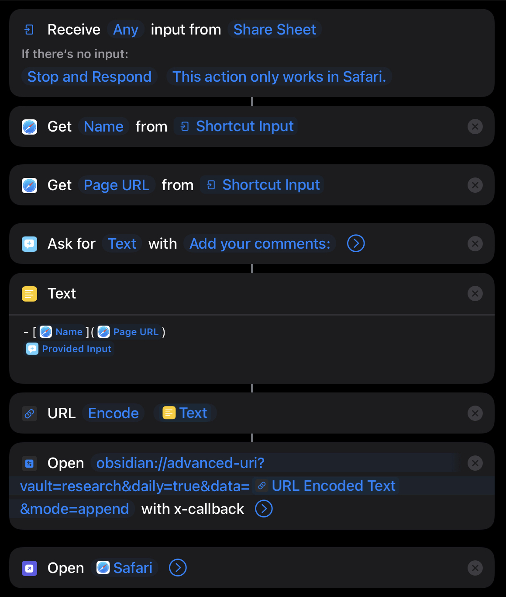

Finished: How I Make Photographs by Joel Meyerowitz 📚
That was good! It’s been a while since I’ve read a photography book. This one is about the craft of ideas of photography, and the “soft” skills around that. Not much (but not none) is said about the technical aspects. I’ll keep it and revisit as needed.

Finished: The Laws of Simplicity by John Maeda 📚 I was pretty disappointed in this book. It’s more MBA focused than art or design focused, and a number of the stories are pretty forced, or don’t feel all that genuine. Maybe they’re just dated, idk. It’s not totally worthless, there are some good ideas in there, but at some point I gave up and only skimmed the last third of the book.


Finished: How to Think Like Shakespeare by Scott Newstok 📚 I read this over the summer. I tried to stop but couldn’t, so I guess it was interesting enough. Some ideas I still think about, like the model that thinking is like a handicraft or other manual skill. I find that idea useful.

Finished: How to Be Interesting by Jessica Hagy 📚also read this the other day, it was fun.

Finished: The Life-Changing Science of Detecting Bullshit by John V. Petrocelli 📚 âï¸âï¸âï¸âï¸âï¸ highly recommended

Currently reading: The Master and Margarita by Mikhail Bulgakov 📚

Finished: Wool by Hugh Howey 📚
The short version: this is a book that takes the idea of “good writing is about the characters overcoming challenges” to it’s most extreme limit. It’s all suffering and adversity, almost too much. If you can get past that, then it took 2/3 of the book to get going. Maybe it was that way so the long suffering reader gets a real feel for time, and struggle. However, the last 1/3 really moves and was a page turner. I am interested in reading the later books now.
More details below (vague spoiler warning).
I appreciated that the author did not call attention to the things that are hard to believe like submerging a neutral pressure suit under tens and tens of feet of water will just work and you also won’t get the bends during a panic resurfacing, and where are they getting tea from (this only pops up once) or is it actually hundreds of years old, and how come the people don’t develop distinct accents or dialects, and can they really make these things like semiconductors to last that long or do they have even that manufacturing capability??
Some things that people are knowledgable about seem quite a stretch too, given the other things we learn about the world. Like the have-nots just making up military tactics in confined spaces, on the fly with no training in it, that can succeed (for some definition) against a prepared enemy. I am suspicious of the closed ecosystem being able to sustain for that long. But I don’t know enough about ecology to be any more than that about it, so I’ll leave that one there. Or how come there aren’t problems with diseases in the later parts of the story; you’d think separate populations would generate different strains of viruses and when they meet it would be bad for one or both. Where is the underground/black market economy? It really stuck out as something missing from the world to me. There some scenes that described and used the kinds of connections that would enable black or gray market trade to exist, but it seemingly doesn’t play a part in this story.
There may have been a few too many dramatic coincidences to believe, some of them defying even the most generous probabilities.
Even with these cracks and inconsistencies though, if you don’t notice or think about it, then the story is fine. But the veneer over the true science fiction and obvious dramatic or poetic license is only paper thin. Maybe I do prefer hard sf and a little more effort on the part of the writer to make it believable in a somewhat-ordinary-or-at-least-plausible-turn-of-events-for-the-universe-that-they’ve-constructed sense. In the end, I think this story was more of a cartoon depiction than a live action staging.
All that being said, I’m curious how the author arranged all this to exist, which I think is in the first sequel.
Maybe later I will elaborate on the more constructive thought provoking ideas that I had while reading the book. Things like, this is a mirror of our current times (most writing usually is), intra- and inter- nation-state-wise, and how would I arrange a society to function in such isolation, and this is really just a different setting for the same problems and ideas of one of those generation ship scifi stories, isn’t it? I had a lot of “how could this be different” thoughts to many plot points and story choices as I read, I should keep notes on those for the next book I read.
Currently reading: Wool by Hugh Howey 📚

Finished: The Three-Body Problem by Cixin Liu 📚
it was ok. I don’t plan to read the sequels, I’ll check the wikipedia pages to see what happens.

Finished: The Happiness Hypothesis by Jonathan Haidt 📚 👍

Finished: How To Think: A Survival Guide For A World At Odds by Jacobs, Alan , 1958- (author.) 📚 👍

Finished: Salt Fat Acid Heat by Samin Nosrat 📚 👍


Finished: Collected Fictions by Jorge Luis Borges 📚
I actually only read Ficciones. Where have I been on Borges? Missing out, that’s where!


Finished: The Return of the Shadow by Christopher Tolkien 📚
Much more interesting than I expected, as a nerd, as a reader, and as an aspiring writer.

Finished: How To Think: A Survival Guide For A World At Odds by Jacobs, Alan , 1958- (author.) 📚

Finished: 300 Arguments by Sarah Manguso 📚
It was interesting, I had a few thoughts in response.
I’m not writing them down here right now, but I might do it sometime later.

Finished reading, with satisfaction: The Sense of Style by Steven Pinker 📚
Dang, that was a much better read than I was expecting. I will keep that one on the shelf for reference, and re-read any section now and again.
Reading "The Fellowship of the Ring" and "The Return of the Shadow" in parallel
Currently reading: The Return of the Shadow by Christopher Tolkien 📚
and
Currently reading: The Fellowship Of The Ring by J.R.R. Tolkien 📚
I read the first chapater of FR, and then the same in RS (first phase, anyway), and it was totally unsettling. Like reading the twilight zone version of some history you know really well. What a trip. I’m going to do the reverse order for chapter 2 and see if that is less unnerving.
It’s been quite a while since I read LotR (I pronounce it loter), over 20 years, I think. I have seen the extended version of Jackson’s films quite a few times over those years, and the memory of the films has really modified what I thought was in the text. So this is kind of like re-reading with fresh eyes. I’m pretty excited!
The RS / history of the text, after the alternate history take is absorbed, is also super-duper fascinating. Like a mystery novel in construction. I’m enjoying what I’ve read so far.
Nerd alert 🚨
😁

Finished reading, with satisfaction: Blindsight by Peter Watts 📚
Well that was rather excellent. I will read the sidequel book too at some point. Some quick notes:
- not always the most graceful writing, particularly in the beginning
- it’s hard scifi, so expect jargon and nonchalant use of unexplained technicalese. Keep a dictionary handy, wikipedia will tell you which sections to expect.
- there are nontrivial elements of horror, in several flavors. Reminded me of House of Leaves in that way.
Thought provoking work, I’ll consider other Watts books going forward. Taking recommendations, as always!

Finished reading, with satisfaction: Bird by Bird by Anne Lamott 📚
What a good book. This is therapy. It’s permission. I should have read it years ago, but maybe I wasn’t ready for it then. Extremely highly recommended.
Currently reading: Bird by Bird by Anne Lamott 📚
Why did I wait so long to start reading this? Why did previous attempts not take? This is really true and excellent writing about living I mean writing I mean about trying. Trying to do anything that isn’t your personal default. Oh man. So good.

Finished reading, with satisfaction: The Fifth Season by N. K. Jemisin 📚
Good story, it really moves. Not sure exactly the genre. Probably not science fiction. Maybe fantasy? Elements of young adult, but also romance (I think, very adult topics anyway). I very much appreciate the natural, non-judgy, and often kind but not holding back, point of view. Casual writing style works better for me than I expected. Some of the best interpersonal arguments/fights with about the right emotional sting that I’ve read. Bravo! Can’t wait to read the next one.
Some other things I liked:
- geology! And rocks
- a building’s structure plays a critical role for a plot point
- Fun made up words that are suggestive of their origin. I am not a linguist but I still enjoy it

Finished reading, with satisfaction: The Dispossessed by Ursula K. Le Guin 📚
100% XXXXXXXXXXXXXXXXXXXX 100%
Good book, I liked it.
Always open to recommendations 😁
Currently reading: The Dispossessed by Ursula K. Le Guin 📚
This is going to be a page turner, I can tell already. Hey, that’s not facetious, I’m serious!
Something I saw earlier today. It’s just clouds. I mean, I know sunsets are cliche. But I enjoyed seeing it this afternoon, maybe you can just enjoy it too.
Saw a cool cloud this afternoon. Actually, there were a bunch of cool clouds. The light in the late afternoon was great. One cloud was right under the moon, and it was a very cool looking cloud. But there was this tree in the way, or a house. And then it had changed and it was just an ok cloud, with not great light anymore. So it goes. This one is the little-fish cloud that I got, and I’m pretty happy about it.
Was discussing names that stretch the limits with a friend tonight. A person he knew had used a mathematical term for their childs middle name. My friend’s remark was something to the affect of “that’s a uniquely American thing, choosing non-traditional names.” Where he’s from, if your name is not a saint’s name, well, that could be challenging. So I had a go: Juul Juicero … Smith? Hilariously unforunate. “You see, Juicero hadn’t peaked yet when I was born….”
What’s new today? Getting my running going again. Aiming for 3 runs this week of 20 minutes each, in the afternoon. It was hotter today, 88 F, than it was on Monday. But since this was the second time out running it felt better. I wouldn’t say cool, but less difficult to keep up my steady pace.

Finished reading, with satisfaction: A Little History of the World by E. H. Gombrich 📚
I only read the last chapters, to get the highest of highlights covering from ~1800 up to 1915. For that purpose it served excellently. My appetite is whetted for more details on this period. I have more questions now, and some better, refreshed and renewed, understanding of the shape of events during that time. I will refer to this text in the future when I want to get the gestalt of the orthodox view of events for other periods as well.

Finished reading, with satisfaction: A Brief History of Equality by Thomas Piketty 📚
5 out of 5 stars for this one: âï¸âï¸âï¸âï¸âï¸
I found this book to be very informative and overall a good read. I’m looking for more context in this area. In particular:
- Why did progressive taxation and the welfare state become the chosen option beginning around 1915? What events lead to that conclusion? I don’t find “because World War 1” to be sufficient. It must have been a long road leading up to that.
- How did the free movement of capital around 1980 come about? Also, there are consequences of this globalization, and I want to have a firmer grasp on the connection between this cause and effect. It really seems to be a defining frame for so many issues in the world; is that true?
- And at the same time, circa 1980, the decline of progressive taxation. Was is the same fundamental forces? And no wonder our infrastructure is poorly maintained and failing: we built it all in an entirely different budgetary situation. (Edit: added this one)
- Generally more of a connection between the historical context and the basically economic story that Piketty tells here. I would really like to compare the events that are emphasized by different authors in the same time periods.
- Exploring the conceptions of private property as a concept for common good. I assume that this is a regular socialist topic, but I haven’t read much of that.
- Finding an accurate description of the global economic system, meaning capitalist, socialist, and the hybridization.
There are some few details in the text about these events and ideas, but I want to understand more concretely. If you’ve got good book recommendations, I’m interested. I have a few books in house already that I can credibly start to expore some of this stuff.
On Making My Writing Less Hard
You probably remember that I recently said I was revising the plan. Well, that was saying that I intended to do that. So here’s the next iteration. I got lucky and a couple of things hit this week. Or really, more than just a couple of things did.
First, I found Oliver Burkeman’s newsletter The Imperfectionist. I forget how I got to that, maybe it was when I returned his book to the library early via the Libby app and clicked the link to his website. Or maybe it was randomly from another newsletter. Or maybe hackernews. Let’s not get too distracted.
Hmm. I think it was the newsletter.
Oliver has this great edition about making writing less hard. Just like the source I linked to last, I’m going to do an advert for this post. It’s really great.
- Because I haven’t found a better way to make this point in my own words for you, I’m just going to quote his first section heading: “Good writing is pointing out.†There’s a lot more helpful explanation in that section. This framing, that good writing is about showing what you found interesting, what caught your attention, was really helpful to me. I’m doing it right now.
- He’s got some words about knowing when to stop. This didn’t resonate with me at first, but it does now. I think I’ve still got a lot more processing to do on this particular lesson. I’ll be coming back to it.
- Finally, Oliver reminds us that writing doesn’t really start with a blank page. And this is the section that I am responding to here today. This is the one that inspired the next iteration in my writing plan.
To finish my advertisement: it’s a good article, good writing, short, direct, practical, actionable advice. I don’t know if it is helpful for everyone. It is helpful for me.
So, what’s the revised plan?
Before I get to that, I want to connect this bit about not starting from a blank page to some other things that I’ve read this year.
The same book that Burkeman mentions, How to Take Smart Notes by Ahrens has a lot of useful practical advice on writing. He is writing about academic texts, but it applies lots of places I think. Ahrens also talks about not starting from a blank page, start from your notes of what you have been reading. But how? I’ll be honest, as practical and helpful as Ahrens’ prescription is, it still didn’t make sense to me.
Later I read some slides (edit: link added) about practical epistemology. The author talks about not only how to go about forming beliefs that are both more correct and less wrong. He also makes some suggestions about how to write, since writing is a great way to get feedback from yourself on your own writing. Honestly it was very similar to Ahrens’ advice, but slightly different. It’s a good set of slides. Like I said, I’ll add the link.
The penultimate (thus far) connection was some things that are the Bullet Journal Method book. There are a lot of really good, practical, tips in that book. If it seems like something that might work for you, I really suggest you take a longer look at it. Go grab the library copy and browse through it. The thing I want to highlight here is the sprints. I’ve used sprints before because work. But I’ve never run my own sprints. And I’ve never run my own sprints for my own projects at home on myself. That’s what we’re doing to try here.
Quick aside: there is a whole mess of other relevant things in that book too. But I’m going to omit that stuff for now. Just know that it wasn’t only the idea of sprints that was helpful here.
The last connection was Burkeman’s article.
So this is the plan. First, since I haven’t been very good collecting post ideas I’m going to jump start that. Well, since it took a bit to finish writing this, that part has already happened. Second, I’m going to take one of those ideas and work on it for an hour. Not finish and publish it, because I don’t know when it’s done. Just show up and work on it.
Third, I’m going to reflect on that process and refine, Deming loop style, to see what I should update. This is the mini sprint to jump start the flywheel. Last, it’s just not credible that I will be publishing daily anymore. I have a full time job, and other stuff, and a daily blog is just more than is realistically achievable. Often, hopefully more than once a week, but, well, as the sub-title of the blog says, no promises.
Let me summarize the plan again.
- On day 1 of the sprint, spend an hour brain dumping out all the ideas for blog posts I can think of. With what the next step is. I believe that is possibly due to GTD (edit: link added).
- On day 2 of the sprint, go through that list and pick one do the next step. Probably also brain dump all the random unordered thoughts onto the page too. Finish by attaching the next step.
- On day 3 of the sprint, reflect on how that went and decide what needs to be updated. Decide the next steps and when/what the next sprint should be.
A few things to note here: the time limits, the separation of idea generation/capture from post development, the focus on process instead of outcome. These are all things that were connected to these different sources I’ve mentioned.
That’s it, that the plan for now. Hopefully those ideas that I’ve generated in step 1 can be used for developing future blog posts and research. But I’m not sure how soon they’ll be ready. I guess one revision that’s already available is to distribute effort going forward between the ideas that seem closer to ready and those that will need more work so that posts are evened out a bit. Idk, I’ll have to think about it.
PS: there are a couple of steps I didn’t do on this post that I will be doing going forward. They’re both from Ahrens' book: live outlining (making an outline and constantly updating it during drafting), and editing more drafts. This version here is draft 0. For this post I wrote the word jumble to get all my ideas on the page, and then I wrote draft 0. Copy-paste to here, and make a couple of tiny tweaks before hitting publish. I will do more next time.

I added How to Know Everything by Elke Wiss to my Want To Read shelf 📚
I saw this book before somewhere, I don’t remember where. But I passed it up because it couldn’t possibly be true; knowing everything is not something that a person can do. So I figured it must be some gimmick, something else. Plus, I’d already read How Not To Be Wrong. Until I read this book review which corrected my misunderstanding. Philosophy, you say? How to ask better questions?
I’m in.
Just finished Sable. What a cool game. What a great soundtrack.

Finished reading, with satisfaction: The Bullet Journal Method: Track the Past, Order the Present, Design the Future by Ryder Carroll 📚
Revising the plan
OK, so what have I learned from the longer and the shorter recent blogging chain? And what am I planning to do next in this space?
Quick recap of what has happened: I signed up for micro.blog for reasons, there was the 30 day challenge pin which was enough motivation for me to post everyday for a month, I got that, and it’s been a struggle to post since then. I also read Bullet Journal Method 📚 which has been very helpful for thinking about focus, and about doing less.
-
Why do I want to do this, what was my initial motivation? I think I’ve got some things to say that might be helpful to others. I want to get better at writing effectively to say those things. I also have an idea for a novel that is not finished, so I need more practice at writing. Several novels actually. 📝
-
I am not sure how much time I really have for daily writing on the blog. I’ve gotten a lot of value out of improving and targeting my journal practice. Maybe I should just focus on that for now, for some limited time, and revisit later. 🤔 But I also think I got a lot of value from writing the blog posts too. 🧐
-
Churning out posts for 30 days on whatever was in front of me was fine, but kind of untargeted. I think an iterative improvement would be to align the blog writing with a longer term goal. Make the action of doing the blogging something that supports progress toward that. There are two goals (as already mentioned): my own observations, and progress toward my novel.
- Advancing the novel could be research reports, exercises for writing, etc.
- I hesitate to share my own observations because they feel unoriginal or derivative, or repetititve of something that I just read. Even though I know my own observations are unique to me.
Oh, and reading reports. Everyone loves a good book report, right?
-
I still think writing is important for knowing what you know, and understanding what you think. I don’t want to stop doing it.
-
It is very easy to substitute “working on the blog” i.e. futzing with the css or whatever, for writing. Writing was and is the goal. I have mostly successfully avoided doing much futzing. Staying focused on the writing is explicitly the goal here. No futzing around.
What's next is that I sort out my goals and try to align my blog writing practice with those. I also continue getting real with what is practicable given limited time. I will also be experiment with being more intentional about post constraints, not just the alignment with the goals.
I'm not going to be hyperbolic and say that writing well is a super power, but it is a skill that makes you more effective at living.
Question: has anyone tried combining bullet journal collections and johnny.decimal? Too fiddly or perhaps some helpful structure?
In light of today’s news, which I strongly disagree with, I am keeping my distance from the internet and news in general for now. It’s such a sad sad thing.
Solidarity!
I took BART today for the first time in, well, ever. I am actually quite impressed. It was a smooth ride (maybe a bit loud at times), and it ran efficiently. My other experience is with CalTrain which I have used quite a few times. I vastly prefer either of those options over driving myself if I can help it, but the BART was much faster for a similar commute, and it felt faster too. Given that, I’ll probably take a pass on CalTrain until after the CalMod upgrade is complete for any work commuting I have to do, at least. Probably still the better option if I want to go to a ball game.
BART: I recommend it. 👍
Just Journaling
I am ambivalent at best toward online Bullet Journal culture, more often I find the ferver off putting. I have found the book 📚 to be none of that. Today, and yesterday, one line is particularly applicable:
When you say yes to one thing, you are saying no to something else.1
That point is much more broadly applicable to me too, but I’m focusing on today. I said yes to several things today: journaling about yesterday, errands, repairing a sliding door that wasn’t sliding,2 visiting with a friend, and making dinner. Making dinner to me means cooking and preparing, and serving, a time consuming thing. But it’s all making and sharing. It’s something that I haven’t said yes to enough.
But saying yes to these things means I didn’t say yes to some other things that are also important to me, but apparently less so? Or less right now? I’m not sure. They were less urgent. Working ahead of time on this blog post is one thing that got a no. And making some art with my plotter also got a no today.
Sidebar comment: It’s not the right time, but I am exploring alternative names to “bullet journal.” I am not a fan of the bullet in bullet journal. Maybe “just journal” or “right journal” or… hmm. I don’t know, it’s a work in progress.
I guess there will be more posts in this theme, this personal journey of journaling.
I was going to write about my busy day today. I started writing it, in fact. But I wouldn’t want to read that, so I’m not going to make you read it either.
Instead, I’m going to think about what to write next time that would be more interesting to me and I hope useful to you.

Currently reading the audiobook: Braiding Sweetgrass: Indigenous Wisdom, Scientific Knowledge and the Teachings of Plants by Robin Wall Kimmerer 📚
Wow, powerful preface. Chapter 1 follows up with more story telling power. Thanks for the recommendation @chrisaldrich!
This Week In Captio Captures
Some things I quickly captured this week with Captio:
- Some just barely absurd foods. You have to grab them quick or they start to sound too ridiculous or maybe actually someone eats that. E.g.s: grilled peas, fried lettuce, smoked apples or avocados, and shredded artichoke hearts. It was kind of a writing exercise, very “when the inspiration strikes.”
- What color ink I suspect that I used in my notebook quite a while ago: Sailor Nano Souboku or Lamy Blue Black. Probably the latter, it’s darker.
- The Goal Streaks app. For tracking my blogging streak. Do I really need an app for this??
- On Lies:
- Pluto: “No mind is ever willingly deprived of the truth.” Via Epictetus, Discourses 2.22.36.
- Alan Turing: “Hardest time to lie to someone is when they are expecting to be lied to.”
- Also from The Imitation Game: “Sometimes it’s the very people who no one imagines anything of who do the things no one can imagine.” Christopher Morcom.
- If you’re lacking motivation, perhaps the next action is not actually small enough. Break it down some more. Also, the 10 minute rule.
- “Remember, for everything you say yes to, you’re also saying no to something else.” Ryder Carroll in The Bullet Journal Method, p 105.
There were a few other odds and ends about bigger ideas that I’m not ready to share, and a couple of bits related to ongoing projects around the house.
Next step: migrate these from my email inbox to the right longer term home.
↠morrow
Bullet Journaling?
Just doing a quick tour through this. I kinda feel like my notes aren’t gelling, and I’ve started collecting kind of a lot of them. A friend said this was working for him, so I’ll take a look. Not planning to read every page though. I’ll set a reminder to post an update in a couple of months.
Currently reading: The Bullet Journal Method: Track the Past, Order the Present, Design the Future by Ryder Carroll 📚
Public library for the win, it’s even a physical copy!
On setting aside The Discourses of Epictetus

I’ve had to move Discourses, Fragments, Handbook (Oxford Worlds Classics) by Epictetus 📚 to my Reading, but like not right now shelf. I have completed Book 1, and will shortly finish Book 2. Books 3 and 4, the Fragments, and the Handbook will have to wait until some other time. I’ll probably start with the Handbook when I do pick it back up. I have some more thoughts…
I may do a more well thought out review later, when I finish the rest of it. But here is my hot-ish take right now:
- Is it me or is he brining up death, exile, and suicide-as-a-legitimate-option kind of a lot? Maybe times were a lot different back then and these were common concerns. Or maybe these things loomed large in the minds of his target audience: the wealthy men that could afford to hire philosophy teachers.
- He has his moments when he’ll say directly what he means. But a lot of the time he is pretty round about with getting to the point, or saying clearly what he is trying to tell his students. It can be rather indirect. Is it a mysterious affectation? A conversational style to engage the listener? He was speaking these words, after all. Something else, like giving the audience what they want to hear, what they’re expecting a philosopher to sound like?
- Come to think of it, I get the sense that he doesn’t think too highly of a lot of the students or interlocutors he’s addressing. Even if they are just hypothetical people he sets up to knock down, it seems like not the most trusting of teaching styles. It also seems like his students maybe had a habit of coming all haughtily arrogant and he’s got to take them down a peg. I find it off putting and boring. Tiresome. The teacher is not taking the students seriously.
- At several points he makes rather unserious arguments. That a god or gods exists isn’t even said as an axiom, it’s just so obvious that anyone who says differently is a fool. This, Epictetus, is not an argument. Instead of treating the competing philosophical schools seriously, they are usually rather casually characatured, or straw man/person’d and considered dealt with. Frankly, I can hear the guy yelling about it through the ages and pages even today.
- Not a very inclusive group either. It was the times, sure. But that doesn’t mean it doesn’t color the rest of the work. How are you going to just paint over those pieces and not see/wonder how they have distorted the rest?
All that said, there have been a few passages that seem quite useful. There were some interesting points made that are worth pondering. But there was a lot of wading through sections that wavered on the edge of just not worth reading, with the occassional bit of useful life observation hidden in there that makes you not give up. Even if the life observed was almost 2000 years ago, some things are still familiar.
↠morrow
Thanks @jean for the stickers!

Too Many Words

Again, with the power prompt today there was too much material. Here is the current recipe:
- Write what happened. This can be brief.
- Write why it happened, if it needs motivating.
- Write about what I think it means, if that is something that I spent time thinking about.
- If necessary, write about the context. That might have something to do with the above.
It turns out that a lot happens on an ordinary Monday. I don’t think that I am being too detail oriented either. I guess I need to be more efficient with my words? I suspect that as a writer this is a good problem to have, so I’ll keep working that particular problem. I’d like to get through the whole day; there are things that are worth writing about in the later part of the day too.
Here are a couple of things to try tomorrow:
- Write the shortest possible recounting. Just the events. These are like the notes of the day, from memory.
- Pick the things that seem worth diving deeper into first, and write about those. Trouble is that it’s not always obvious what I’m going to get when I start unwrapping some thing that happened.
- Make those notes of the sequence while it’s happening? Just the briefest possible notes.
- Go in reverse order. Might be weird to do. Might be worth it anyway.
I’ll also finally get around to reading the next chapter in Writing Life Stories sometime soon.
↠morrow
End of day ramble
Time is running out and I haven’t thought of much to write here today. I did use my power prompt and got lots of words out, but not anything that I felt like elaborating on here. I’m not sure yet how to translate all that personal material to the things I write here, even though I think that they shouldn’t be all that separate.
Speaking of that power prompt, the first day was really great. The second was much more of just a recounting of what happened, static sequence of events style. Not much of why did that happen, and what might it mean. So today I let some of that stuff back in. The pages just fill up. I didn’t have time to get it all down in the morning. I had to make a bit more time in the afternoon to finish. Lots of directions this can go, I think. Looking forward to exploring as many of them as possible.
A few random thoughts:
- Monday the thirteenth always seemed like a better bad luck day than Friday.
- Does any one eat “tuna nachos”? It sounded just plausible enough to me to exist. Tuna salad scattered on some potato chips. You could even melt cheddar over it, tuna melt style. Not sure it’s something that I want to exist, but it just might. Inspired by the tuna salad that fell off my sandwich on some chips at lunch today. Thought of a few other “just plausible enough” foods, and a few duds.
- Not been much reading of Dracula lately. I hope everyone is ok.
June Rain
It’s a really nice day to share an all too brief and far too rare June rain with some friends that surprise come over and bring pizza fixings and also enjoy the rain with you, even if it means we have to abandon the patio at the end because it is in fact raining a bit too much to stay outside. It’s a very lucky thing.
TIL: a powerful journaling prompt
There was a comment on a hackernews post this morning about journaling that I thought I would give a try: just recount what happened in the last 24 hours. So I tried it. I didn’t add too much of what I thought of what happened later, just what I remember thinking about it at the time. I plan to follow up with later thoughts on some of those things.So much came out of this. I think it was 4 pages1 before I got tired of writing. And that only covered about 12 hours.2
Now I have a solid default option for journaling, and it’s a powerful one.
There was a second suggestion somewhere in that thread: journal twice a day. I could see the last 24 hours really being useful in the morning. And an evening session for elaboration, further thoughts, or just other topics. I do think that this is worth the time investment, but it is that: a time investment.
Journeys and Stories and Secret Destinations

< blockquote pre=“Martin Buber” >All journeys have secret destinations of which the traveler is unaware.< /blockquote >
There were many charming and interesting things mentioned in The Grail by Brian Doyle 📚, more than I expected for such a local interest book.
I like the framing of this as “secret destinations” even though I don’t think those destinations are pre-decided and don’t need to be. You find them in you, in the place, and in the moment, alone or with those around you. The destinations can even remain secret to you alone.
They’re kind of like a very condensed version of the way that Doyle describes stories:
< blockquote pre=“Brian Doyle” cite=“The Grail, p. 148” >…this is what happens to people and stories, you sense them and collect them and tell them and savor them and then you and the stories move along down the road, sometimes together and sometimes not.< /blockquote >
Those secret destinations in every journey are our own personal poetry, resonant in our hearts and minds. Even on the longest journey.
< blockquote pre=“Dag Hammarskjold” >The longest journey is the journey inward.< /blockquote >
I’m starting a new daily blogging chain today. I had done really well with the pin for 30 days of blogging dangling out there in front of me. Now that I accomplished that, and then some wobble in my schedule and I dropped a few consecutive days. Honestly I don’t think I can blame schedule wobble, there was more interference in the last month than the events of the last week. Try, try again.
I have found an unknown treasure right in my own backyard. Excellent backpacking is a truly short drive away, and the price is a few days of sore legs, which I am still recovering from. I guess 22 miles in 24 horus will do that too. One big win is that I finally get it about using trekking poles on the way down all those steep hills that this particular location offers.
🥾⛺️🥾
Writing blog posts is difficult when there is a lot going on and I have weekend plans to prepare for too!
Two random... realizations(?) today, I guess
I won’t make a big thing about this. Because I commuted to the office today, I have less time to write here tonight.
- Been watching Stargate: SG-1 lately. What exactly is Teal’c’s character motivation, anyway?
- I have a tendency to heap all responsibility on my own head. Well, realizing that is not new. Recognizing it while it was actually happening was. That’s progress!
Such is life.
A couple of phrases that I noticed while reading lately
It’s fun to notice the shorter and longer phrases that you’re noticing while reading.
- “through empty lands south of Hollister” - Pinnacles National Park wikipedia entry
- “frontiers that favored” - from “A brief history of equality” by Piketty,
- “Like an hour I must come, and like an hour pass away.” - Epictetus, in Discourses.
These are often not even whole sentences, just a few words that stand out as more resonant that their neighbors.
Planning to write, writing a plan
For the last couple of weeks< marginnote >Actually 4 weeks.< /marginnote >I’ve been planning out my writing schedule. On Sunday night I make a plan. 30 minutes this day, an hour that day. And I’ve been sticking to it. Make the plan on Sunday night, do the writing the rest of the week. Until this week. I think it was the three day weekend; Sunday night wasn’t the “wind down the weekend” night, so I didn’t make a plan. Time to make a plan and get back on track. No big deal, just get back on the writing plan.
Pinnacles National Park
I had a brief visit to the West Division of Pinnacles National Park this morning, to hike the Balconies Cave trail, and a bit more. And a bit less. It didn’t go entirely as planned, but it was a nice day out in the wildlands.
Fun fact, this is the western portion of a volcano that straddled the San Andreas Fault and was subsequently sheared apart. This portion moved 200 miles north by the fault. The eastern portion remained, known as Neenach Formation and it is evidently not as dramatic.
Oddball social media
I thought I would do something a little lighter today, so I’m sharing some of the other takes on using the internet to facilitate communications. I kind of enjoy some of these different interpretations, anti-gamified in a way, of social media. Maybe “alt-social media”?
- Pony messenger, like email but it delivers only once per day at the same time for everyone. → @garo is me, feel free to write.
- Minus.social gives you only 100 posts, ever. That’s my profile on the link there. But what if I waste a post and regret it? So I haven’t written even one yet.
- Slowsocial.us is about focusing on connection. Not much else to go on here. I don’t remember when I made the account, and signing up didn’t help figure out what it is any better. Maybe it’s a scam?
- Slowly distance based delay of message delivery. It’s like pen pals but on your phone.
Know of any other good ones?
Too many inboxes?
I mean a different type of inbox in this post, not the email inbox. Well, not always.
I am still struggling to get a consistent “in-tray” for my captured notes. I basically mean fleeting notes, the notes that you capture while not distracting from your work in the moment, and then deal with later. Since I’ve been homebrewing my own Johnny.Decimal+Commonplace book+Zettelkasten system in Obsidian, so that’s where I put my in-tray.< marginnote >Yeah, I know that’s a lot. Most of it is working, just not really the zettelkasten part so much yet.< /marginnote >
- It’s not always convenient or smooth to get every fleeting note into Obsidian. There are several failure modes: syncing is slow, capture from webpages is clunky.
- A pocket paper notebook is fun to use sometimes. Nothing beats an inactive surface (paper) at being almost completely unable to interrupt you or distract you like an active screen does.
- Captio has been really great for a low distraction digital interface, on both my phone and ipad. But it sends the output to my email, not Obsidian. And it’s not available on laptops.
- What about marginalia? Literally those notes in books. I set a reminder to go back those notes a month after finishing the book to grab the ones that still resonate. Is that in the in-tray?
- I don’t use Obsidian to manage those reminders. Instead I just use the stock reminders app.
- For other reasons, I’m starting to explore pinboard.in, and I used raindrop.io before that, and del.icio.us< sidenote “del” >I won’t link to it, it seems to be unsafe!< /sidenote > before that. I’m not satisfied with Obsidian for bookmark management.
I have been trying to reduce friction here, but as Bob Doto points out< marginnote >Just found Bob. Bob seems to be talking directly to some of my questions.< /marginnote > frictionless can be its own trap too.
I’ve considered using drafts. It’s available in all the places. It’s clean and fast and pretty distraction free. But it’s another system to invest in, it might not be worth the effort. I like simple things.
Maybe some friction is necessary to get a grip on things. Having a few-but-not-one inboxes maybe is okay. The point is to be intentional about handling those notes while taking them out of the in-tray. The point is not focusing on getting it into one perfectly beautifuly simple elegant system, but to have something that works for me and captures most of my notes.
Anybody out there got any thoughts or suggestions on this particular aspect?
Getting my email back
A couple of years ago I noticed that I actually wasn’t the owner of my email inbox. My email inbox owned me. I just archived the emails that it presented to me, from meaningless mailing lists, from old camera clubs, or irrelevant advertisements that started coming after some purchase or other. So I unsubscribed from these obviously useless emails.
But it wasn’t enough. A year or more later I noticed that I was still getting more than 10 irrelevant or uninteresting emails for every one that mattered to me. But some of these had sentimental value or some reason for keeping them coming.
- I had bought something from this company once, and I thought I might buy something else from them again some day.
- I agree with this cause.
- This mailing list at one time sent me some stuff that was useful, and I hope that it will do that again.
- I attended a lecture from these people once and hope that someday they will offer another one that I would like to attend.
The list goes on. One un-critically thought through excuse after another. They are easy to break. I’ll do these ones real quick.
- Refuted: I don’t need to be reminded daily. I have that thing I bought to remember. Or if I don’t remember, maybe it wasn’t that special after all. These emails aren’t going to make up for that.
- Refuted: Receiving an email, or a lot of emails, is not really that much of a commitment to a cause. Do something more impactful if you really care.
- Refuted: By the 3rd or 4th un-useful email, it’s ok to unsubscribe. There is a rule on the internet somewhere about that.
- Refuted: If there is another interesting lecture you’ll probably hear about it from some community you actively participate in. There are probably dozens and dozens of lectures that you don’t hear about and missing those has turned out ok so far.
I suspect that keeping all these emails was a reasoning breakdown at the intersection of a) free stuff, b) Gmail adding tools for managing more useless junk, and c) the mirage of Gmail’s archive and search features. “Just archive everything” is a trap in general. It’s been said that archiving is just throwing things away for the uncommitted. I am hardly ever able find something that I know is in my email with search. At least not without putting in some real effort.
Upon recognizing all this, I did an even more severe clean out, and I was left with some real breathing room. I think I got only one or two automated emails a week. It was great, so great that I subscribed to The Sample to find some better newsletters. But I think I’ve reached some new maximum amount of suffering midly useless emails again and I’ll probably unsubscribe from about half of those. At least those emails are ones I intentionally signed up for. I know who’s fault that is, and I can just as easily undo it.
Join me in unsubscribing from useless email!
Quieting the Noise
Sometime last fall I made the effort stop multitasking at work. Rapidly switching context had reached its limit and my role was changing. It was hard at first, but it’s gotten easier.
Over a few months after that, I found interruptions increasingly unpleasant. What was once a necessary function of my role had become a frustrating experience that just happened to me without my control while I was trying to do other things.
So I have steadily turned off more and more of these notifications of chats, emails, some meetings even. At first I was reluctant. Being resonsive to others, helping to unblock them, was something that I was proud of. But as space opened up for thought and focused work, I have become increasingly protective of that time.
A lot of other notifications had to go too. They were preventing me from being able to focus, just think uninterrupted, or recover from an intense discussion. I also noticed that a lot of notifications where coming from apps or businesses, and they just weren’t useful, relevant, or interesting to me. So I muted, unsubscribed, or in rare cases scheduled the notifications for only a couple of times per day. An ever expanding list of apps and systems have been banned from ever notifying me.
It feels good to have some space, some breathing room. Some time to think and decide what’s next.
Reporting from the road: finale
< summary >Not the finish I was expecting< /summary >
There was startlingly less remarkable things on the road today, the last of our journey. We covered 384 miles (618 km), and only saw two things to remark on.
- Mount Shasta had surprisingly less snow than when we drove past going north 10 days ago. Partly because I suspect it had a fresh dusting from the winter-in-May storm, and also because it was clouded in and hard to see. But still, Lake Shasta is low, and not much snow on the mountain. This is worrying.
- The colored trucks, also near Mount Shasta, which I did see on the way up also. But, since I’ve seen them for years and years, I didn’t really think they were remarkable until I reflected on it. This is kind of stretching it.
This meager haul is far below expection. But I think that’s just part of small numbers.
Reporting from the road: the return
Today’s drive was the reverse trip of part 2, Portland to Ashland, 285 miles (460 km).
Here is what we noticed:
- A big (person sized) “Nature Pride” graffito. Only in Oregon, I guess.
- A large house fire south of Salem. I hope everyone is ok.
- Saw 5 separate people walking south, or resting, on the shoulder of I-5. I feel like times are more desperate than I’ve ever seen in my life. I’m trying to figure out what it means and what to do.
- I was really noticing the planer nature of the scattered fluffy cloud strata. It was very 3-d as we drove over the hills and through the valleys; moving nearer and farer from the cloud layer quite noticable shifted the perspective.
- Mount McLoughlin was very pretty, a perfect cone.
That’s 5 remarkable things. Going north, it was 4, and based on the first day we expected 6. I think this is all fairly consistent. Does it say more about the rate of remarkable things on the road, or about the noticer?
As an aside, I learned that there is a complement to metropolitan statistical area: micropolitan statistical area. Neat. Found this while reading about Roseburg, Oregon.
Masks, 2 of 8
< summary >In which another mask is described.< /summary >
The second mask is similar in overall structure to the first. But, there are some significant differences.
There is the domed forehead, but this time the transition to the eyes is smooth. The mouth is still rounded into an “o”, and it is still at the chin, but it faces forward instead of down.
< newthought >The mask< /newthought > is carved from one piece of wood, it is smooth with some sparce lines inscribed in the surface and inlaid with white. The wood is dark color, perhaps ebony. Starting at the top, the forehead is domed and protrudes forward beyond the nose even. The eyes, at first looking lidded, are in fact rendered with some different, more reddish pieces that have pupils cut in them. The slits below are for the wearer to see out. The nose gives a triagular appearance, even though the tip is rounded, and the bottom, where the nostrils would be is a flat plane. There is a long space between the bottom of the nose and the mouth, at the chin. The cheeks and upper lip area are smooth and rounded to flat. The lines cover all the surface and have a bisecting line down the center of the face to the mouth. The round inside of the mouth, the nose, and the eyes are the only area not touched by the lines. Lines continue under the chin. There are not ears.
It is a true mask that could be worn. Overall the feeling of the mask is friendly to neutral.
Powell’s Books (Hawthorne) keeping it 💯
I’m still impressed, even after all these years. And I didn’t even go to the big one!
Dracula Daily May 9-18
< summary >Spoiler Warning.< /summary >
Here’s a recap of the last few days.
We met Mina and her friend Lucy. Based on literary reasoning, I assume that Lucy’s fiancee Holmwood, and one Dr. Seward, will feature in the story’s future.
Unfortunately for Harker, he went exploring further into the castle during the Count’s absence, and willfully fell asleep. While on the cusp of sleep three Ladies approach, but are stopped by the Count who says Harker is his alone. The Count returns Harker to his rooms. Later, when he checks the door where it happened, it’s shut tight.
‘til next time!
Masks, 1 of 8
The house I am staying in has a few masks decorating the walls. There are 8 masks in 3 rooms, I believe. I thought it would be interesting to describe them. Here is the first one.
This is likely the first mask you would see. As you enter the house it is directly facing the front door. The mask is near the center of the wall of the dining area next to the door to the kitchen. It is placed at the height of top of the kitchen doorway. There is a bit of space around it, separating it from the other pieces on this wall. Also, there is another mask to the right of it near the corner. I’ll describe that mask another day.
This mask is carved from a single piece of wood, and it is old and worn. Most of its surface is rough wood, with some evidence that it was once painted or perhaps scorched or burned to darken it. The forehead is domed, almost a quarter of a sphere, and there are raised rings at the temples. Where the ears would be are two small holes on each side. Perhaps for ears, or perhaps for straps. I don’t know because I haven’t seen the back. The eyebrow is formed by a hard right angle cut that goes back to the plane of the face, where the eyes are. These are two circular bore holes close to the nose. The nose is narrow acute triangle that reaches to a rounded point. The nose also has a single small hole bored through, as though pierced. The lower part of the face descends and narrows smoothly to the chin. A small mouth is at the point of the chin below, forming an “o”. The mouth itself is chipped, no longer having a perfectly smooth o. Overall the mask is a fairly calm one with smooth lines and soft edges.

Do y’all know this book? The Art of Noticing by Rob Walker 📚 I love this book. Anyone know any more books like this? I’m always on the lookout for good books. This town has one of the best bookstores in the world, and I like supporting it by buying books there.
Brunch
Brunch at home is such a good meal. Even if home this week is a rental in the next state. Overnight french toast bake, crispy hash browns, eggs sunny side up or over easy, coffee, tea, juice. Fruit salad, with oranges from a neighbors tree back home. It’s not a complicated or fussy event, at least not where I come from. One thing that made it special today is having all the family together here, even us out of towners, to celebrate a late Mother’s day.
In the afternoon I got to solve a technical TV issue for my parents so they can enjoy a baseball game without the spinning baseball of your-connection-has-been-interrupted. That’s the hope, anyway.
Portland, OR recommendations? I’ll be in town for the next week. What’s good these days? It’s been ~25 years since I moved away, and a pandemic since I last spent time here. What’s new? What’s good?
< figure src=“https://garo.ooo/uploads/2022/314502fb9c.jpg" alt=“A picture of a the underside of a tree canopy.” title=“Tree in SE Portland, OR.” caption=“Portland has great trees.” label=“undercanopy” >
{kind=link}
📷📱
Reporting from the road II: destination reached
More miles more smiles. Or, in our case, less miles less weird stuff.
< newthought >During the drive today, I saw a bit fewer things than expected< /newthought > but not anything out of statistical expectation based on yesterday’s observation.
Very succintly, yesteday the drive was 383 miles, and today it was 285 miles. Since there were 8 interesting things seen yesterday, if the rate is the same, we expect to see 6 today. I like error bars, so 6 ± sqrt(6) or 3-9 remarkable things expected.
Without further delay, here’s the report.
- The Human Bean, which in this instance is a coffee shop. That’s not the remarkable part. I distinctly recall someone on MB recently using the term, I think in some identifyably Oregon context.< marginnote >Maybe I made that up. I can’t find where I saw it.< /marginnote > Before that it was a phrase sometimes heard in my house growing up. Not much heard by me after leaving there. Maybe it’s an Oregon thing? Hard to back that up.
- “Fish Viewing Area.” This has got to be about the most Oregon (or pacific northwest) thing ever. You don’t notice these things until you’ve been away for a while and realize that you didn’t see anything like that anywhere else in all the other places that you’ve been.
- The adult shops. I was in Portland a month ago and there were quite a few. My recollection is that is actually usual. I was expecting to see some similar number on the drive this time, but there were only few, in the places I remember them being. I think I have enough to do, but I suppose I could do some counting to estimate the prevalence here vs other places.
- A whole lot of rain. Very on-brand for Oregon, but also kind of unusual for mid-May. Thank goodness for Rain-X!
Seeing 4 remarkable things is a little low, but maybe 8 was a bit high yesterday. Small numbers are trickly like that. I’ll get another shot in a couple of weeks when traveling in the reverse direction back south.
Does anyone get Apple Shortcuts the app on iOS? I am trying to grok it but maybe I am missing something fundamental. What I am trying to do is append a link and some of my annotations to an Obsidian note.< marginnote >Maybe I’ll just use Captio.< /marginnote >I do have it doing that, but the user experience is not something that I would call nice.
There is a lot of automatically jumping from app to app. I have not figured out how to script the text formatting that I want to apply to the input in a foreach loop. Searching for clues about what to do is maddening because the names are all the same and “shortcut” is such a generic name.
I would like to improve things, but eventually my patience for playing the Apple guessing game runs out. Anybody got any tips?
Reporting from the road
The road is a great place see things.
- A “sheisty” little train. CFNR was so maligned I think because of some graffiti on the cars?
- Shasta “Lake” looking maybe the lowest I’ve ever seen it. At the overpass just before the 705 N exit, I could see the Sacremanto river in its channel that is often under up to 50 feet of water (just eyeball guessing the high waterline depth from a speeding car). I wonder what we would get if we sized the Southwest water system today, after an additional ~80 years of weather observations?
- Mt. Shasta covered in powdered sugar, looking very nice.
- The roadside political commentary: state of Jefferson (been there for years), Biden is Weak (new one to me). Personally don’t particularly want to draw any more attention to either of those, but great big road side signage is hard to not comment on.
- And the roadside statuary: cow with calf, and the dragon. Both have been there for quite a few years now.
- Saw three small airplanes taking off in a row. The last being the slowest, but probably has the best view from a huge panoramic dome windshield.
- The huge burn scar north of Redding, it seemed to go on for miles. Not sure which fire or year that was from.
- Someone wearing what looked like an animal skin print rug, poncho style, and maybe it was a large Ikea grocery bag balanced and draped over their head? I couldn’t even see the person walking inside this getup.
Stay tuned for a similar update tomorrow from the rest of the journey.
On getting out of town
I’ll be road tripping north today, and on past trips I noticed that some towns feel faster to get out of than others. I’m finally taking a moment here to notice it a bit more.
On past road trips I’ve noticed that different places have different departures times, and its route dependant. Some shorter, some longer. The exit tomorrow is longer, one of the longest I know.< sidenote “lie” >The other “longest exit” is getting off Long Island to head back upstate. Takes forever.< /sidenote >I don’t feel like I’ve really gotten out the door until I’m on I-5< sidenote “i5” >Interstate 5, USA< /sidenote >. That’s about 1.5 hours drive from where I start when there isn’t any traffic.< sidenote “traffic” >There is always traffic.< /sidenote >
Something peculiar about it is that this particular exit is the fast one, even though it adds 30 minutes (according to the maps) to the total time vs another faster-in-total route. The other faster overall route takes 30 more minutes to feel like I’ve “left”, bringing it to about 2 hours. Feels like an eternity.
< newthought >In looking for patterns< /newthought > in this, I noticed that both places I mentioned already, the Bay Area and Long Island / NYC, are very large metropolitan areas. Maybe it’s that I don’t feel that I’ve left until I’ve crossed some frontier of the metro area. That sounds like a natural thing to think. And it holds up when I think about different size places I’ve lived. It also survives the test of exiting town via the nearest frontier; in my case a southerly exit is the quickest.
But the journey began when I left my house, so what does the city have to do with it?
Dracula Daily is taking off? I didn’t have this on my bingo card.
@cobblystreet on Twitter has grabbed a bunch of memes from Tumblr for me to enjoy; thoroughly enjoying these takes 🤣
Can’t wait for tomorrow’s installment, hopefully there is one!
📚
Started reading: A Brief History of Equality by Thomas Piketty 📚 for a book club.
What makes a good first sentence work?
📠In Writing Life Stories: How To Make Memories Into Memoirs, Ideas Into Essays And Life Into Literature by Bill Roorbach there is an exercise from chapter 1 about first sentences. These aren’t limited to the very first sentence in the piece, it could be the beginning sentence in the chapter or segment too. The goal is to look at a bunch of them, pick some personal favorites, and determine why they work.
I won’t reproduce my list in entire. These aren’t even my favorites, just ones that I wanted to comment on.
< epigraph pre=“Herman Melville” cite=“Moby-Dick” link="//micro.blog/books/9780393285000" > Call me Ishmael. < /epigraph >
I wonder what is the speaker’s true name. Why are we using this name instead of that one? Ishmael is an exotic feeling name today, whether that was true or not in the 1850s I don’t know. It’s such a short sentence to contain all that. I think it’s a great success. My spouse disagrees.
< epigraph pre=“John Gardner” cite=“Grendel” link="//micro.blog/books/9780307756787" > The old ram stands looking down over rock piles, stupidly triumphant. < /epigraph >
This is a very odd place to bring our focus when the title character is such a mythically great monster. Why is he concerned about goats at all? It has a bit of whimsy. I feel like I am seeing the old ram through someone else’s eyes, with some of their thougts about it. There is background here, judgementalness and prior history with this goat in particular.
< epigraph pre=“Umberto Eco” cite=“The Name of the Rose” link="//micro.blog/books/9780544176560" > It was a beautiful morning at the end of November. < /epigraph >
This is a very unusual wording given that we are purportedly reading a manuscript written in 1327, translated into French. And why is this what the author, a monk, is bringing our attention to? Seems very unusual, personal, a memory.
< newthought >After examining first sentences< /newthought > more than I had before, opening sentences need a couple of things to really succeed. They need a bit of crunchy specificity (thanks Tim!). A good opening sentence has a touch of mystery. It opens the door a bit further, maybe in a surprising way on what you already know about the story. There should be a noticeable question in your mind when you read it: why is this the aspect that the author chose? It should illicit a response of curiosity, and a desire for resolution. It launches (or re-launches) the “story” in the direction that it eventually goes. The shorter the better the sentence, often times the better.
There is a companion exercise to take a similar look at my own first sentences. I still have to do that one.
Dracula Daily 3-8 May
< summary >The events of the book so far are summarized and discussed. Spoiler Warning.< /summary >
The events so far (from memory, going forward I will keep my own running summary notes):< marginnote >For other posts in the series, see here.< /marginnote >
- We meet Harker on his first night in the Carpathian mountains of Romania. It is the eve of the final leg of his jouney.
- Harker departs the hotel with a quite singular scene of the hotelier and townfolk trying to pusuade him from finishing the journey. I have never seen, heard, witnessed, experienced, nor participated in such an event in all of my travels or life.
- The transfer from the coach to the carriage is quite strange, and the ride to the castle is also beyond experience, and harrowing. I find it troubling that Harker is so matter of fact about what he witnessed. Perhaps he is questioning what he truly saw, or perhaps at this time over a century ago there was more credibility about this type of thing.
- Harker meets the Count. They talk to the morning.
- They discuss the Count’s new London property. Evidently the Count is planning to move.
- Harker determines that the Count is without servants.
- Harker understands that he is captive.
There we have it, things have gone quite badly for Harker it would seem. A few things are worth it to me to note about this reading.
First, the immediacy and intimacy of the writing is quite successful. The food, the experience of travel, the scenery. The layer of reading it on the same day as it was written helps to build the connection with the character. I noticed that upon entering the castle, discussion of the particulars of the food stop being listed. It makes sense to drop that sort of trivia given other factors.
Second, Harker seems oddly lucid and accepting about these experiences that he is having. Even upon noticing that he is imprisoned, he doesn’t list his options for escape. Maybe Stoker thinks readers will accept that all the avenues are in fact closed. Maybe readers in that day did. I am not satisfied with the short discussion of cliffs and locked doors.
Third, I am quite satisfied with my own interest and engagement level. Of course having never been interested in horror as a genre, or in Dracula in particular, I was quite surprised at my own interest level. Glad to see it hasn’t waned yet. It’s quite possible that the novelty of real time reading is keeping my engangement level up.
Pardon my dust
< summary >While I experiment with Micro.Blog and the Tufte Theme< /summary >
I will be editing and republishing this same post several times during the day. Apologies in advance!
Update: experiments have concluded. Thanks for your patience!
The Micro.Blog plan:
- What are the limits of
more? - Styling things in the timeline vs title vs blog home page vs post page
The Tufte theme plan:
- Try out the side and margin note features
- Use different variations of figure
- Blockquote and epigraph
- Does cite do anything other than styling?
- div and section
- subtitles, i.e.
## - other usual markdown styling choices
Other experiment
- a hand written note, with text extracted via iOS camera
- alt text, just the
imgtag, or also via markdown?
The goal is to have a better understanding of this and to leave some notes on this post for my future self.
That’s a lot of stuff up there. I reserve the right to break it up over a few days.
Results
More tag
If the post has a title, that’s all you see in the timeline. On your own blog home page, everything up to the more tag will show up. In the RSS feed, the whole post appears whether there is a more tag or not.
Markdown
This is what bold looks like.< sidenote >Bold is **bold**.< /sidenote >
This is what italic looks like.< sidenote >Italic is _italic_.< /sidenote >
This is what strong looks like.< sidenote >Strong is <strong>strong</strong>.< /sidenote >
This1 is what emphasized looks like.< sidenote >Emphasized is <em>emphasized</em>.2< /sidenote >
< newthought >Certainly it is worth reviewing< /newthought > the Tufte-css page that is referred to in our own MB Tufte theme page.
The author of the Tufte-css page points out that it will aid the reader if you stay consistent between either using the headers, or the newthought tag. Don’t use both.
Cite
Here I am going to demonstrate a citation: < cite >E. Tufte, Beautiful Evidence< /cite >.< marginnote >That is < cite >some text< /cite >.< /marginnote >
Blockquote vs Epigraph vs markdown
This is a markdown
>block quote.-someone said it
and
< blockquote pre=“someone said it” cite=“a source site” link="//garo.ooo" >
This is a Tufte style blockquote.
< /blockquote >
Epigraph is not a thing, per se. It is what the blockquote is called in Tufte-speak. (Is this paragraph very wide?)
The below are epigraphs. Note that they are in italic.
< epigraph pre=“there is not source” > This is not compact. What is a pullquote? < /epigraph >
< epigraph cite=“Wikipedia” link=“https://en.wikipedia.org/wiki/Pull_quote" > A pullquote is a key phrase, quotation, or excerpt that has been pulled from an article and used as a page layout graphic element. This was not compact. < /epigraph >
Note: the compact mode doesn’t appear to work, since then things become very wide.
Figure
< figure src=“https://garo.ooo/uploads/2022/8bc851efe0.jpg" label=“mars_small” title=“A small picture of a picture of Mars.” caption=“A medium long description of a picture of a picture of Mars.” alt=“small mars” type=“margin” > Is there is a figure over there? Yes, there is.
{kind=link}
Another paragraph. Above here should be a small picture in the margin. There should be a regular sized picture below here.
< figure src=“https://garo.ooo/uploads/2022/8bc851efe0.jpg" label=“mars_reg” alt=“medium mars” title=“A picture of a picture of Mars.” caption=“A very long description of a picture of a picture of Mars on my wall at home in my office.” >
There is a paragraph of text. Below this text should be the same figure but even bigger.
< figure src=“https://garo.ooo/uploads/2022/8bc851efe0.jpg" label=“mars3_biggg” type=“full” title=“BIG Mars picture.” caption=“A very large picture of a picture of Mars.” alt=“big mars” >
There should be a big picture above this.
< newthought >A quick note about img alt and title fields:< /newthought > setting the alt field in the figure shortcode will set it for the image. The title field is used exclusively for the figure caption, and it is not replicated in the img tag, which is how the XKCD site gets those witty commends when you right click a comic.
< newthought >Edit 2022-05-15:< /newthought > The photos page will not collect images that are added with the figure shortcode. One hack that works, but I don’t know the other consequences of, is to add the images again with html img tags, but hide them.< marginnote >Just get the html from your uploads.< /marginnote >This can be accomplished by adding a style="display: none; to the duplicated image. Take a look at the source for this post and you’ll see what I mean at the bottem of the body.
Bonus Poetry
In an effort of science, I have copied the text from the image below using the iOS text tool. While it wasn’t perfect, it was something. (Why is this paragraph so wide?)
< poetry > Below here is a picture of these very Some worels. but in my own hand. Today! Tokay! hope that my handwriting is cleer enough tut I lant has to just rewrite the whole massge.. That’s enough for this fast I think. In La La < /poetry >
Pretty neat, huh?
< figure src=“https://garo.ooo/uploads/2022/2e71d50766.jpg" label=“handwriting” title=“A handwritten note” caption=“iOS produces some garbled poetry, but I can work with it.” >
{kind=link}
Not the greatest interpretation of what I actually wrote above here.
Conclusion
I think for now, I am done.
Postscript
< section class=“sans” >
Is this in sans?
< newthought >Note:< /newthought > I had to “edit css” and add .sans { font-size: 133%; } to get this to look right in the size.
Hypothesis: section shortcodes need space around them. The templating engine is putting p tags in strange places.
< section “end” >
Is this paragraph the correct width or is the section not actually closed here? That is the real question. I think it should also be in a serif font.
Red font with a html span tag and the danger class.
Test.
Lao Tzu: Tao Te Ching by U. Le Guin

Finished reading, with satisfaction: Lao Tzu: Tao Te Ching: A Book about the Way and the Power of the Way by Ursula K. Le Guin 📚
But like, I’m going to have read it ten more times at least. There is an extra dollop of mystery in this poetry, and calling it that seems to be understating it. I’m not even sure what to say right now, so much good stuff here.
For future ease of reference, I leave here one of Le Guin’s sources: Carus’s word-for-word translation of the text from 1898.
< newthought >I read this book< /newthought > as a physical book, and a very nice copy too! Good thing because I’ll be back!
Reflecting on the week
It has been a busy week, but a good week. There were plenty of moments that I took time to think, to just sit with my thoughts. Whatever thoughts those were in those moments. I’m glad I did that instead of trying to scramble and fill the time with execution when what I needed was time to reflect and absorb and process.
It has also been a turning point week, with me having had a lot of talking to do. Lots more talking is coming too. Very direct, honest talk about things that needed to be said. None of it anything to be afraid of, but still it felt difficult for me to say before. Most of it honest reporting of the world as I see it, and the challenges I see. This week was not easy. But it was doable, and even comfortable. And a relief. Maybe I hadn’t arrived at a final position until recently.
I feel good about the decisions I’ve taken, and the ways that I’ve gone about them. I’m very glad for that. Just one step on the road of personal progress.
By the way, I’m talking about work stuff, which is of course important, but there are many more important things in life.
Evening Links
< summary >Some links from my nightly RSS news feed.< /summary >
I may from time to time share a sampling of the things that I have seen in the morning or evening perusal of my RSS feed reader. This time is one of those times.
- GoldenEye 007 on 4 screens? As a huge fan of the original in it’s time, this sounds like a dream to me. But also screencheating< sidenote >Or, “stop looking at my screen!” as I called it.< /sidenote >was sooo muuuchhh fuunnnnn!
- Noto font includes everything? I dunno, this is pretty cool actually. I even like the mono emojis.
- Mermaid is a great tool, I use it in Obsidian. Any chance we can get support in MB? Or maybe we already have it.
- Indirectly got to Paul Graham’s piece on How to Disagree. I usually enjoy Paul’s< sidenote >We’re not really on a first name basis.< /sidenote >essays, or at least learn something.
- I do enjoy these ambient noise things. Someday I may post a whole collection of them, with Photian comments.
Thats it for now, time to read some Dracula. Have a good night!
A few quick thoughts after having just finished The Grail by B. Doyle
Finished reading yesterday, with satisfaction: The Grail: A year ambling & shambling through an Oregon vineyard in pursuit of the best pinot noir wine in the whole wild world by Brian Doyle 📚
It is, as Brian Doyle says, “a thirsty book.” In just one sentence: a great many enjoyable personal essays on the growing and making of the Lange Estate wines. And really it did make me want to head out and pick up one or several bottles of pinot noir from all around, Oregon or elsewhere, because that is a wine that I do enjoy, among others.
I made many underlinings, and asteriskings, and otherwise notings and dogearings while reading this one, which is my new habit. I am going to let those marginalia age for a month and then come back and I might have more to share about this book. And after I talk it over with my dad who recommended it because he knows many of the people in the book and worked in the Oregon wine industry for almost 30 years, I suspect I’ll have a few more things to say then too.
Oh, and a very unexpected cross connection: this is “a thirsty book”, and so was the chicken< marginnote >“paprika hendl”< /marginnote >“very good but thirsty,” that Jonathan Harker eats for supper on the 3rd of May in Bistritz, Romania in the very opening of Dracula that I just started reading yesterday.
< newthought >I read this book< /newthought > in the form of a physical trade paperback that was printed very very well, however if I had one thing to mention it would be that the typesetting was left aligned instead of justified, but I think that may have been a design choice to support the author’s rather conversational, and often long, sentences. Good bright white paper and clear text throughout. A joy to read.
PS: my writing style may, just a bit, have been affected by the writing style of the author of this short book.
Passwordlessness is coming! I hope this is a good thing.
Too Much to Know by A. Blair

< summary >In which I report a couple of very interesting things I found in the book, and why I ultimately abandoned reading it.< /summary >
< newthought >The other book that I recently abandoned reading:< /newthought > Too Much to Know: Managing Scholarly Information before the Modern Age by Ann M. Blair 📚.
There is a ton of fascinating history in managing and accessing all the information in books. A lot of the tools and technology you and I use today are much older than you might think! Tables of contents probably started out as the outer layer of a scroll.
Also, lots of fun random trivia. And not at all presented as fun random trivia. This is a serious scholarly book after all. Example: incipit: “the first few words of the text, employed as an identifying label.” I didn’t know that word or definition. I didn’t even know that was a thing. I might be able to use that. Cool!
Or the crazy random rabbit holes you can get to on the internet now. I learned about the Bibliotheca of Photius, which is Photius’s< sidenote “Who is Photius” >Photius of Constantinople, 810-893.< /sidenote > list of all the books he read, and his reviews< sidenote “Inventor of book reviews?” >Maybe he even invented the book review, or at least the written form.< /sidenote > of them. Like this gem about Socrates of Constantinople: “There is nothing remarkable in the author’s style, and he is not very accurate in matters of doctrine.” Ouch. You can check out the rest of Photius’s big list of books with commentary here! Never would have found something like this in a million years.
< newthought >But, what am I going to do with it?< /newthought > Right now I haven’t got many plans that this would fit in. Maybe one story idea could use it for texture, so I’m glad I found it. Reminds me a bit of The Ninth Gate (book or movie, take your pick). But there was a lot of reading to find these two and the few others too.
So, I’m a bit more bummed about quitting this one than the other one. It was interesting, often fascinating. But, in the end there was too much to read here to get the useful bits out that I wanted to use for my own practical gain. I’ll probably graze occassionally, maybe I’ll pull out more random gems.
< newthought >I read this as an Apple Book< /newthought >, and my comment is the same as last time: I’ve seen the end notes done in a more useful way in other books. But I was able to get to the good stuff, so they are at least workable. Really appreciated that about it.
cc @chrisaldrich
The piece of news from the day,< marginnote >PDF of the front page of the New York Times.< /marginnote > about the leaked supreme court ruling, sucks. I disagree with the ruling and am supremely disappointed.
< blockquote pre=“George Steiner” >The intellectual is, quite simply, a human being who has a pencil in his or her hand when reading a book.< /blockquote >
I’ve been doing a lot more of this lately because I finally jettisoned my inhibition about writing in books. I had already been buying used/reading copies for years. Now it’s time to cash in!
Found via Austin Kleon’s great newsletter. The rest of Austin’s comment on this one is great too, check it out.
Is it just me, or are phishing text messages really getting out of hand? Used to be they were only occassional. Seems like it’s almost daily now. In the last ~3 months I’ve gone from mildly skeptical of unexpected text messages to “no way am I clicking on anything in that” unless I’ve Googled the domain, and remembered what I did that would have triggered the text message, and critically examined the contents for phishing bait. It’s not like I was clicking on them before, but it wasn’t such a… reaction. In the last week I switched on the filtering to put texts from unknown senders in their own area in iMessages.
What else can we do about this? I predict the demise of text messaging if this trend continues, or it turns into email anyway.

Oh oh, oh! Dracula Daily began today! I don’t know why I am so excited about this! Maybe it’s the travelogue nature of the beginning, or the comparison of weathers< sidenote “About Weather” >I mean, the experience of comparing and contrasting my weather against the atmosphere of the book, which I assume will follow some seasonal trend and be called out. Just a guess on my part.< /sidenote >I’ll be having over the next 6 months (weather: I’m a fan). I plan to do some realtime commenting on the reading too.
Started reading: Dracula (Norton Critical Editions) by Bram Stoker 📚. Nicely formatted ebook from Standard EBooks if you’re into that.
The things I noted in the first day’s reading: the food (I see cooking opporutnities here), the locations, the corporeal inhabitedness,< sidenote “About Immediacy” >Harker mentions how he slept, and talks about food, and not wanting to miss the train. It seems all very personal/experiential, and immediate.< /sidenote > and the sense of mystery and even a bit of calamity. The world is being set before me, and I don’t know which of the possibilities is a probability. It was only a couple of pages worth. The annotations in the Norton Critical Edition help and also distract a bit.
Anybody want to start a reading club?
What is the right etiquette and way to Micro.blog this?
I really enjoy these comic-commentary types from XKCD 😄. They really capture the uncertainty and confusion of the first time encountering these mathematical notations. Takes ya back haha!

Link to the original: https://xkcd.com/2614/
Another recent favorite in the genre: https://xkcd.com/2586.
Lena @ Things of Interest is a short-ish piece of sci-fic posing as something like a Wikipedia article. It’s about the first successful brain image create in the year 2031. I’d say the piece is a success because my reaction was “oh god, the horror.” And this is not a piece of horror sci-fi.
Have you read Lena? What did you think?
I was frankly relieved to discover on Sunday night that there are no follower counts on Micro.blog. I think taking away this so-called feature will lead to better sanity.
Yesterday was one of those rare days with a mild persistent headache and achy teeth. That is despite taking Excedrin, drinking plenty of water, and eating plausibly well enough. Maybe it was allergy induced? Or maybe I’m catching a cold. This is a pre-recorded message since I am planning to use Sunday as a day of fewer obligations.
Started reading Writing Life Stories: How To Make Memories Into Memoirs, Ideas Into Essays And Life Into Literature by Bill Roorbach 📚 on 2022-05-01 SUN.
Started reading The Grail: A year ambling & shambling through an Oregon vineyard in pursuit of the best pinot noir wine in the whole wild world by Brian Doyle 📚 on 2022-04-30 SAT.
This is a request from my dad; he worked in the Oregon wine industry for 28 years in distribution and knows a lot of the people mentioned in the book. Just not the mainly featured vintners.
Started reading Discourses, Fragments, Handbook (Oxford Worlds Classics) by Epictetus 📚 on 2022-04-25 MON.
Planning to read it slow-ish and interactively, taking lots of notes on the paper copy. I already see that it’s not the most pleasant object to read with variable clearness of the actual text.

Abandoned reading: The Extended Mind: The Power of Thinking Outside the Brain by Annie Murphy Paul 📚. I was reading this book on my iPad with Apple Books.
I approached it with the mindset that these ideas are options for me to consider in my own mind practice, and there were a number of interesting ideas. But yesterday I had to admit to myself that it is time to abandon my comittment to reading this book. I have to do the same with another book it was partnered with, but I’ll get to that another day. I think I read about 30-40% of the book before my calculations told me a sustained effort would require more energy than I had to give it at this time. I will keep it around for the option to browse different sections look for useful tidbits.
I found the idea of the Magpie Mind to be a useful one for understanding how I assemble bigger ideas from whatever is around. Want better ideas? Have better stuff around. Also remember to pause and examine the ideas you have constructed.
I also found the ideas discussed around the poured paintings of Jackson Pollock to be really helpful for inspecting and understanding some things about my own computer art practice that had been quite mysterious to me. My random search for what works and what doesn’t work for me will probably be much more effective with this clue.
There are many other ideas that were also useful and that I will continue to personally explore. You can get a pretty good sense of the type of ideas from Ezra Klein’s podcast with the author.
But some sections were less obviously plausible. I did not see the connection to thinking in groups in the tale about the aircraft carrier and the sailboat. If one of you did find a connection there, I would listen. There was also quite a bit of text related to the ideas presented that I didn’t feel added all that much; some stories about trainings and their audiences that I didn’t think clarified what I was to do with the idea at all. Maybe it’s just me.
Now, some comments about the (virtual) book itself as an object. This is a thing that I care about and might explore at a later time. One thing that I greatly appreciated the author and publisher for including is rich end notes. I was able to use these to track down more technical materials on some of the concepts that had been diluted beyond recovery in the book. Those breadcrumbs are invaluable. However, I’ve seen it done in an easier to use way in Apple Books before, and the increased friction was an annoyance. I have nothing else worth mentioning in my review of the experience of reading the book on an iPad.
Did you read The Extended Mind? What did you think of it?
Found out about Dracula Daily, a Substack that will mail out the contents of the book on the dates that they happen. That starts next week, May 3. I’ve not read Dracula before, so I’m kind of excited about this. Got me a hard copy too: Dracula (Norton Critical Editions) 📚.
In general I enjoy an episodic driven story. The Name of the Rose has a time driven story, and for me it adds an extra dimension to read it around the time of the year that it happens (late November, if I recall correctly).
Anybody have suggestions of other good writing like this? There are some suggestions on the Epistolary novel wikipedia page, but that focuses more on the document aspect of the novel materials, rather than the time/season aspect.
Introduction
Hello new friends. Let me do a short introduction here.
- I like to write 📠and want to get better at it. I am writing right now, am I not?
- I’ve been making art 🨠with computers for a while now, but I have ambitions on drawing too.
- I’ve been on this planet for a while now, so I’ve learned a few things. But I still have questions.
- I recently started dabling in music making 🎵. It’s been fun.
- I’m a competent photographer 📷, it’s a hobby that I enjoy but have been doing less of it lately.
- I like to cook, I’ll probably share pictures from time to time. Maybe some recipes too.
- I’m pretty math curious, so things like that might show up from time to time.
- I went to school for science, physics in particular. So, I have some experience in that.
- I do some software professionally, so I know a bit about that.
Obviously there is more than that, but this probably covers a lot ground that we could use to make a connection. Let’s try to get acquainted!